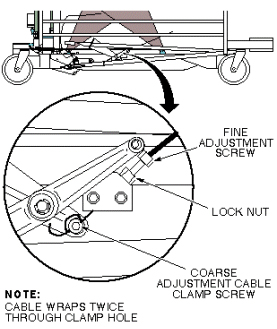

Illustration 1: CRADLE HOME/TABLE DOWN INTERLOCK

Illustration 1: CRADLE HOME/TABLE DOWN INTERLOCK
Illustration 2: CRADLE HOME/TABLE DOWN INTERLOCK

| NOTE: | If the adjustment screw does not provide enough range for adjustment, coarse adjustment may be made to the cable length where the cable end is clamped into actuator bracket. Fine adjustment will be required after performing a coarse adjustment. |